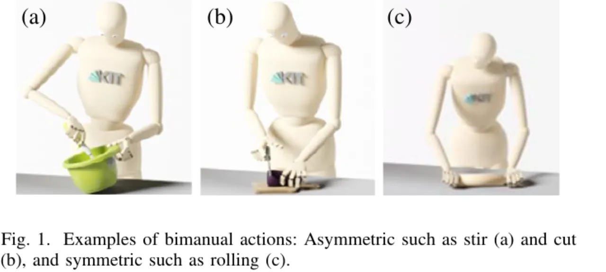
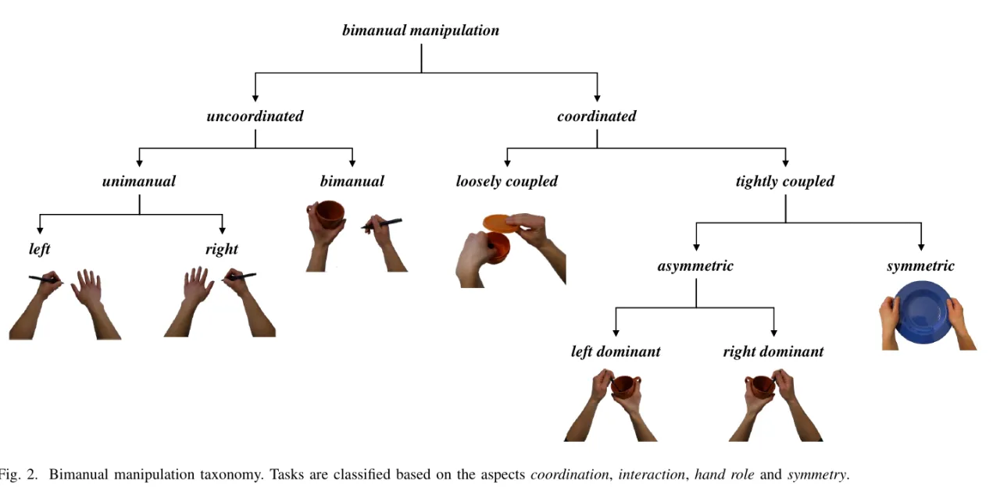
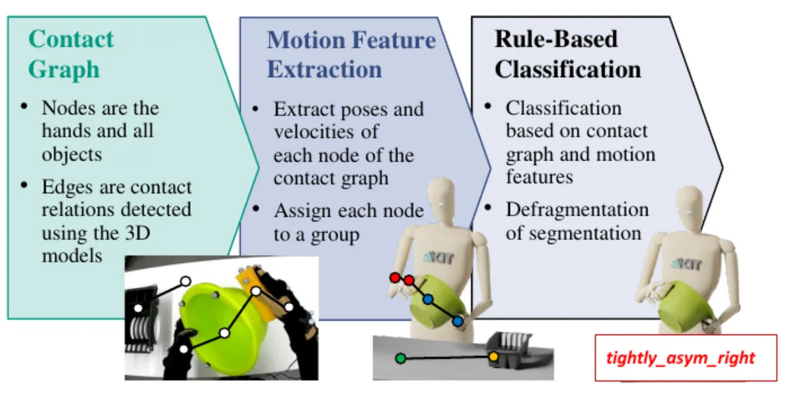
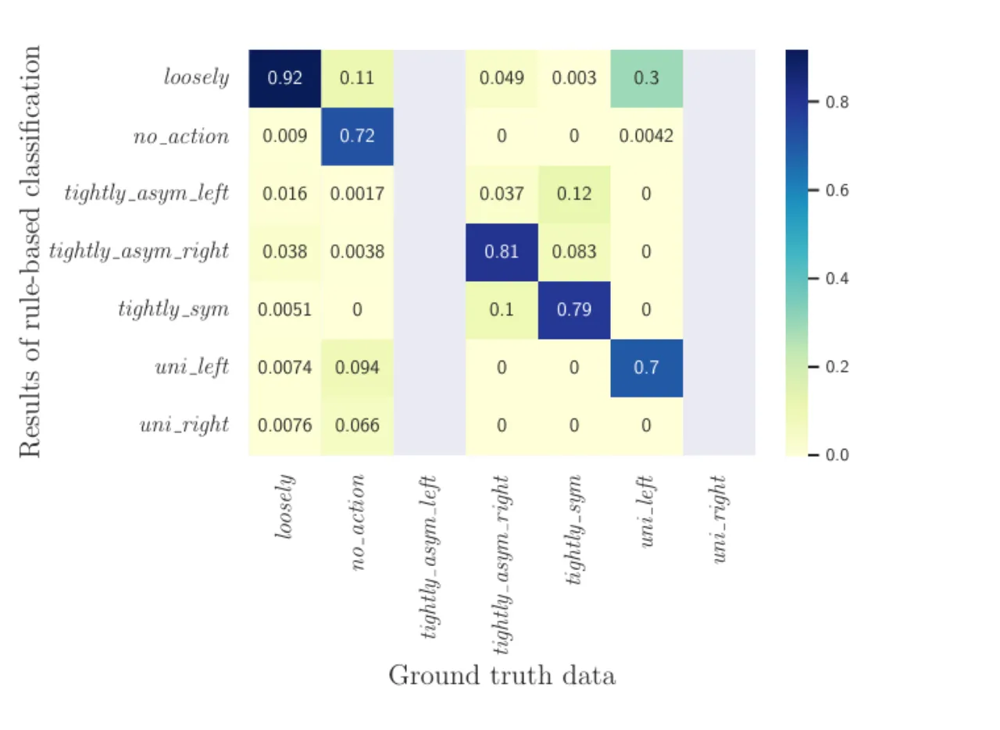

人类的双臂操作能力至今尚未被机器人所企及——它要求同时考虑两只手之间的时间约束与空间约束。本文提出一个从机器人视角（robotic-centered）出发的双臂操作 taxonomy，依据协调、交互、手的角色、对称性四个关键维度区分人类双臂动作的协调模式，并用一种基于接触图（contact graph）的表示 + 规则分类系统在 KIT Bimanual Manipulation Dataset 上验证不同类别可被区分。
行为学研究表明，双臂任务"more than the simple sum of unimanual tasks"——它必须考虑两手之间的空间/时间协调以及相互作用。理解双臂操作的底层概念，不仅对人形机器人上的任务执行至关重要，也对（如中风后的）康复有意义。在机器人抓取中，taxonomy 早已是应对手部设计与抓取综合复杂性的常用工具，但既有工作大多针对单手或一般操作；本文显式地面向 bimanuality。
目标：提出一个类别清晰可分（clearly differentiable categories）、并特别聚焦于机器人双臂操作应用的 taxonomy——服务于从人类观察中学习任务模型（learning task models from human demonstration），以及在双臂机器人上执行这些模型。
作者指出既有分类的两类不足：神经康复领域（如 Kantak 的分类）虽定义清晰但侧重"对称性/肌肉激活"等治疗评估目标；而机器人领域的分类往往"focus less on the precise definition and classification"，只给出支持控制/规划的示意框架、或仅考虑有限的几个类别。这样一种双臂模式的分类可被用于：从人类示范学习任务模型、有效的人机协作、动作识别，以及为双臂操作的协调与执行推导约束。

taxonomy 建立在双臂操作的四个关键维度上：(i) 两手之间的协调 coordination、(ii) 两手之间的物理交互 interaction、(iii) 每只手的角色 hand role、(iv) 任务中的对称性 symmetry。基于此，动作被逐层划分。

coordinated 内部按手间依赖强度进一步区分：loosely coupled 指仅在共同途经点（via points，空间）或同步点（synchronization points，时间）上存在约束，但轨迹之间不存在永久依赖（self object hand-over 是典型例子）；tightly coupled 则不仅有空间/时间约束，还有由接触丰富交互产生的力约束与轨迹级依赖。tightly coupled 内再按 Guiard 的角色观区分 asymmetric（含 left/right dominant）与 symmetric（两手抓取并操作同一物体、存在固定相对变换）。加入 no action 表示空闲态后，用于分析的类别共七类：
| Bimanual Category | Abbreviation |
|---|---|
| No action | no action |
| Unimanual left | uni left |
| Unimanual right | uni right |
| Loosely coupled & uncoordinated bimanual | loosely |
| Tightly coupled asymmetrical left dominant | tightly asym left |
| Tightly coupled asymmetrical right dominant | tightly asym right |
| Tightly coupled symmetrical | tightly sym |
（Table I。注：在纯运动特征、缺乏语义理解时，loosely coupled 与 uncoordinated bimanual 无法区分，故分析中合并为 loosely 一类——作者明确指出这是当前分类方法的一个局限。）

输入为：场景中各物体的 3D 几何模型与 6D 位姿、以及用 MMM（Master Motor Map）模型表示的人体（含手部构型与 6D 末端执行器位姿）。接触图逐帧构建，表示接触关系及其随任务执行的变化。手本身与直接/间接接触的物体归入 rightGroup / leftGroup；固定不被操作的物体（桌、墙）归入 background 以消除误检的接触；其余归入 scene。由于类别只由图的拓扑结构决定，方法在物体层面是 object-agnostic 的。
从决策树根节点开始，先判断 rightGroup 与 leftGroup 之间是否有接触边：
分类采用大小为 10 帧的滑动窗口，相邻同类窗口合为一个分段，再经去碎片化消除小分段，从而同时得到分类与分割（segmentation）。作者提供了公开实现。
用 KIT Bimanual Manipulation Dataset 的 120 条录制（2 名受试者各 60 条）做数据驱动验证。数据由 marker-based Vicon 动捕（100 Hz）与 18-DoF 数据手套（90 Hz）采集，经 MMM 框架重建得到关节角与所有物体的 6D 位姿。自动生成的标签与人工分段的参考数据逐帧比对，用 scikit-learn 计算 micro / macro / weighted F1（micro F1 即 accuracy）。
因录制均为右利手受试者、且限于孤立的双臂操作，参考数据不含 uncoordinated 双臂任务；uni right 与 tightly asym left 两类完全未出现。各类按帧数占比：loosely 46.02%、tightly asym right 28.19%、tightly sym 15.81%、no action 7.14%、uni left 2.84%。
| 设置 | Micro F1 (=Acc) | Macro F1 | Weighted F1 |
|---|---|---|---|
| Total | 84.66 | 57.92 | 82.72 |
| Total subject 1 | 83.60 | 56.44 | 81.34 |
| Total subject 2 | 85.65 | 59.10 | 84.11 |
| Wipe（擦） | 90.08 | 48.15 | 88.92 |
| Stir（搅） | 91.88 | 48.21 | 90.36 |
| Roll（滚/擀） | 78.21 | 35.46 | 69.72 |
| Peel（削） | 85.97 | 46.90 | 84.61 |
| Cut（切） | 78.24 | 35.15 | 71.97 |
与受试者无关地，Stir 与 Wipe 取得最佳结果；Roll 与 Cut 最低——Cut 因数据集中蔬菜建模不精确、且切削转折点缺乏相对运动；Roll 因对称性判据并非总能精确满足。Macro F1 明显低于 Micro，反映各类别频率高度不均衡。

作者明确称，在无整体任务语义理解、仅凭运动特征时二者无法区分，故分析中被合并为 loosely 一类——"the fact that they cannot be distinguished is a limitation of the current classification approach"。区分需额外考察更长时间跨度的运动。
"our method is limited by the accuracy of the manually labeled ground truth data"。分段起止点可能不精确（手的运动起始被检得过早/过晚），导致 loosely 与 unimanual 之间频繁混淆；有时自动分段甚至可能比人工关键点更正确。
录制均为右利手受试者执行的孤立双臂操作，参考数据不含 uncoordinated 双臂任务（若出现会被判为 loosely）；uni right 与 tightly asym left 两类完全未出现，故这两类的分类性能未被真正评估。
规则的硬阈值条件并非总被精确满足：Roll 时对称性判据（恒定手间距）因手位姿微变而失败；Cut 因蔬菜 3D 建模不精确、转折点缺乏相对运动而得分最低。
尽管 interaction 维度以"两手间力的传递"定义，数据集不含力信息，故分析中只使用手与物体间的接触信息，力约束未被直接验证。